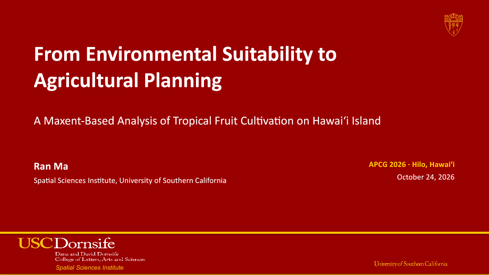

APCG 2026 · Hilo, Hawaiʻi · October 24, 2026
Research presentation
A Maxent-based analysis of tropical fruit cultivation suitability on Hawaiʻi Island.

Ran Ma · USC Spatial Sciences InstituteUse the arrow keys or swipe to move between slides.